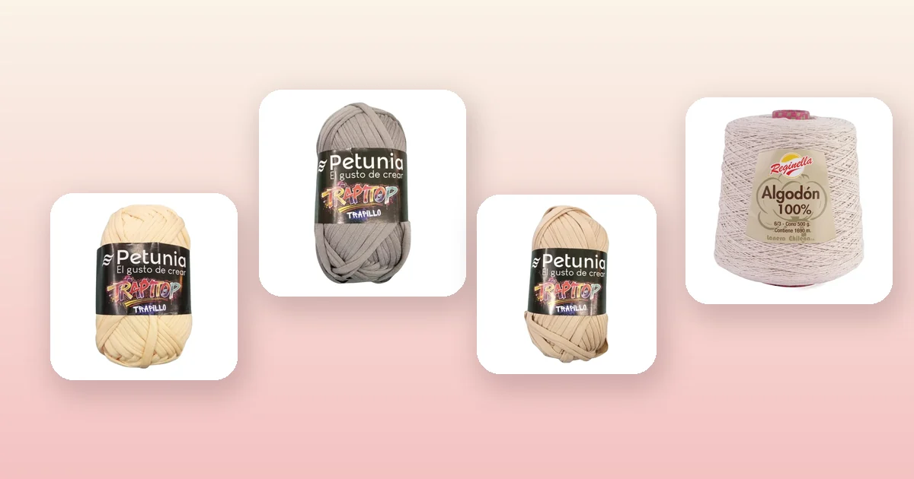

Proyectos de crochet
Cómo tejer una alfombra a crochet paso a paso
Cómo tejer una alfombra a crochet redonda, rectangular u ovalada con trapillo o algodón en varias hebras: cuánto material necesitas según el tamaño, los patrones paso a paso, cómo evitar que resbale y cómo lograr que quede perfectamente plana.

Por qué tejer una alfombra a crochet
Una alfombra a crochet es uno de los proyectos de decoración que más rápido transforma un espacio. Una alfombra redonda junto a la cama, un piso de baño o una alfombra rectangular para la entrada se tejen en uno o dos fines de semana, cuestan una fracción de lo que vale una alfombra artesanal y quedan exactamente del tamaño y los colores que quieres.
Lo mejor es que no necesitas puntos complicados. Las alfombras se tejen con punto bajo y punto alto, los mismos de los puntos básicos de crochet. Lo que marca la diferencia es elegir bien el material, calcular cuánto necesitas y hacer los aumentos correctos para que quede plana.
Qué material usar: trapillo o algodón en varias hebras
Una alfombra se pisa, se lava y tiene que mantener la forma, así que el material debe ser grueso y firme. Las dos opciones más usadas son:
| Material | Ganchillo | Resultado | Ideal para |
|---|---|---|---|
| Trapillo (cinta de tela) | 9 mm | Grueso, firme y con cuerpo; avanza muy rápido | Living, dormitorio, entrada |
| Algodón en 3 o 4 hebras juntas | 8 a 10 mm | Más suave y absorbente, aspecto artesanal | Baño, cocina, pieza de niños |
El trapillo es el material clásico para alfombras. Nuestro Trapillo Petunia viene en ovillos de 100 g con 34 m de cinta de poliéster, se teje con ganchillo de 9 mm y está disponible en colores neutros como gris, arena, blanco y negro, además de tonos vivos para alfombras infantiles.
El algodón en varias hebras es la alternativa para baños y cocinas porque absorbe la humedad. Un cono de algodón crudo de 500 g trae 1.690 m, y tejiendo con 4 hebras juntas te alcanza aproximadamente para un piso de baño o una alfombra redonda de unos 60 cm. Si quieres comparar más materiales, revisa nuestra guía de tipos de lana para tejer.
Cuánto trapillo necesitas según el tamaño
Estas cantidades son aproximadas para trapillo de 34 m por ovillo, tejido con ganchillo de 9 mm y tensión media. Compra siempre un ovillo extra y, si usas un solo color, pide todos del mismo lote para que no se note la diferencia de tono.
| Tipo y tamaño | Metros aprox. | Ovillos de 100 g |
|---|---|---|
| Redonda de 50 cm | 85 a 100 m | 3 |
| Redonda de 60 cm (junto a la cama) | 120 a 150 m | 4 a 5 |
| Redonda de 80 cm | 210 a 260 m | 7 a 8 |
| Redonda de 100 cm (living) | 330 a 400 m | 11 a 12 |
| Rectangular de 50 × 80 cm (entrada o baño) | 170 a 200 m | 6 |
| Rectangular de 60 × 90 cm | 230 a 270 m | 8 |
Para calcular otros proyectos, nuestra guía de cuánta lana necesito para tejer explica cómo estimar a partir de una muestra.
Materiales
- Trapillo o conos de algodón según la tabla anterior.
- Ganchillo de 9 mm para trapillo, u 8 a 10 mm para algodón en varias hebras. Un ganchillo con mango ergonómico cansa menos la mano con material grueso. Si tienes dudas, revisa qué aguja o ganchillo usar.
- Marcador de puntos para señalar el inicio de cada vuelta.
- Aguja lanera de ojo grande o un ganchillo fino para esconder las puntas.
- Malla antideslizante o silicona líquida para que la alfombra no resbale.
- Hilo y aguja de coser para unir ovillos de trapillo.
Alfombra redonda paso a paso
La alfombra redonda es la más popular y la más fácil de empezar. Se teje en punto alto desde el centro, con 12 aumentos por vuelta para que quede plana.
Vuelta 1: anillo mágico, 3 cad (cuentan como 1 pa) y 11 pa dentro del anillo. Cierra y une con pr a la 3ª cad. (12 pa)
Vuelta 2: 3 cad, 1 pa en el mismo punto. 2 pa en cada punto alrededor. Une con pr. (24 pa)
Vuelta 3: 3 cad, 2 pa en el siguiente. *1 pa, 2 pa en el siguiente.* Repite alrededor. Une con pr. (36 pa)
Vuelta 4: 3 cad, 1 pa, 2 pa en el siguiente. *2 pa, 2 pa en el siguiente.* Repite alrededor. (48 pa)
Vuelta 5 en adelante: sigue agregando 12 aumentos por vuelta, separando los aumentos con un punto más en cada vuelta: en la vuelta 5 haces *3 pa, 1 aum*, en la vuelta 6 *4 pa, 1 aum*, y así sucesivamente. (60, 72, 84…)
Con trapillo y ganchillo de 9 mm cada vuelta de punto alto agrega unos 5 cm de diámetro, así que una alfombra de 60 cm tiene alrededor de 11 o 12 vueltas. Termina con una vuelta de pb alrededor para dar un borde limpio y firme.
Alfombra rectangular en punto musgo
Para la entrada, la cocina o el baño, la forma rectangular es la más práctica. El punto musgo de crochet (pb y cadeneta alternados) da una textura tupida que no se deforma y se ve igual por ambos lados.
Cadena base: teje un número par de cadenetas hasta lograr el largo deseado. Por ejemplo, para 80 cm de largo con trapillo, unas 52 cad.
Fila 1: 1 pb en la 4ª cad desde el ganchillo. *1 cad, salta 1 cad, 1 pb en la siguiente.* Repite hasta el final.
Fila 2: gira, 2 cad (cuentan como 1 pb y 1 cad). 1 pb en el primer espacio de 1 cad. *1 cad, 1 pb en el siguiente espacio.* Termina con 1 pb en el espacio formado por las cadenas de vuelta de la fila anterior.
Siguientes filas: repite la fila 2 hasta alcanzar el alto deseado (50 o 60 cm).
Borde: teje una vuelta de pb alrededor de todo el rectángulo, con 3 pb en cada esquina para que quede en ángulo recto. Puedes agregar flecos en los lados cortos: corta trozos de 20 cm, dóblalos por la mitad y anúdalos en los puntos del borde con un ganchillo.
Alfombra ovalada
La alfombra ovalada es ideal frente al lavamanos o a los pies de la cama. Se teje en vueltas alrededor de una cadena base: los lados se mantienen rectos y los extremos crecen como medio círculo.
Cadena base: 31 cad. La diferencia entre el largo y el ancho de la alfombra final será aproximadamente el largo de esta cadena.
Vuelta 1: 1 pb en la 2ª cad desde el ganchillo y 1 pb en cada cad hasta la penúltima (29 pb). 3 pb en la última cad. Sigue por el otro lado de la cadena base: 1 pb en cada cad (28 pb) y 2 pb en la primera cad, donde ya hay un pb. Une con pr. (62 pb)
Vuelta 2: 1 pb en cada punto de los lados rectos y 2 pb en cada uno de los 3 puntos de cada extremo. (68 pb)
Vuelta 3: lados rectos igual; en los extremos *1 pb, 1 aum* sobre los puntos de la curva. (74 pb)
Vuelta 4 en adelante: mantén los lados rectos sin aumentos y en las curvas agrega 3 aumentos por extremo en cada vuelta, separándolos con un punto más cada vez (*2 pb, 1 aum*, luego *3 pb, 1 aum*…). Usa marcadores al inicio y al final de cada curva para no perderte.
Cómo hacer que la alfombra no resbale
Una alfombra tejida sobre piso de cerámica o madera puede resbalar, y esto es un riesgo real en baños y pasillos. Tienes tres soluciones:
- Malla antideslizante: córtala 2 cm más chica que la alfombra y cósela con puntadas sueltas por el revés. Es la opción más segura y se puede retirar para lavar.
- Silicona líquida: aplica líneas o puntos de silicona transparente en el revés y deja secar 24 horas antes de usarla.
- Base antideslizante bajo alfombra: se vende por metro, se recorta a medida y no requiere costura.
Cómo dejarla plana y cómo lavarla
Es normal que una alfombra recién terminada tenga los bordes algo levantados. Para aplanarla, rocíala con agua por ambos lados, extiéndela sobre una superficie plana y deja peso encima (libros o tablas) durante 24 horas. No la planches directamente: el trapillo es 100% poliéster y el calor alto lo deforma o lo brilla.
Para lavarla, lo mejor es a mano con agua fría y detergente suave, o en lavadora con ciclo delicado dentro de una funda o bolsa de malla grande. Escurre sin retorcer y seca siempre en horizontal, nunca colgada, porque el peso del agua estira el tejido. Más consejos en nuestra guía de cómo lavar y cuidar la lana.
Errores comunes y soluciones
- La alfombra ondula como una lechuga. Hiciste demasiados aumentos o tu tensión es floja. Desteje hasta donde estaba plana y haz menos aumentos en las vueltas siguientes, o baja a un ganchillo más fino.
- Los bordes se levantan como un bowl. Faltan aumentos. Revisa que estés haciendo 12 aumentos por vuelta en punto alto (o 6 en punto bajo).
- Se nota el cambio de ovillo. Los ovillos son de lotes distintos. Alterna dos ovillos cada dos vueltas en la zona de cambio para disimular la diferencia, o diseña la alfombra a rayas.
- Me duele la mano. El trapillo es exigente. Teje en sesiones de 30 a 40 minutos, usa un ganchillo ergonómico y no aprietes de más: un punto suelto y parejo es más cómodo y rinde más material.
- La alfombra rectangular queda trapecio. Estás perdiendo o sumando puntos al final de las filas. Cuenta los puntos cada pocas filas y marca el primer y el último punto con un marcador.